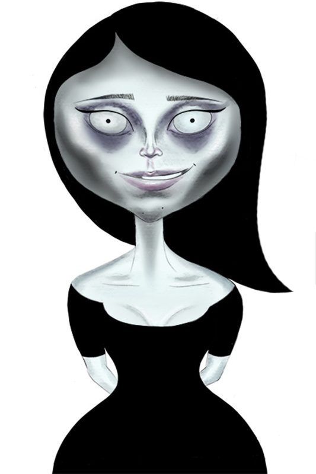
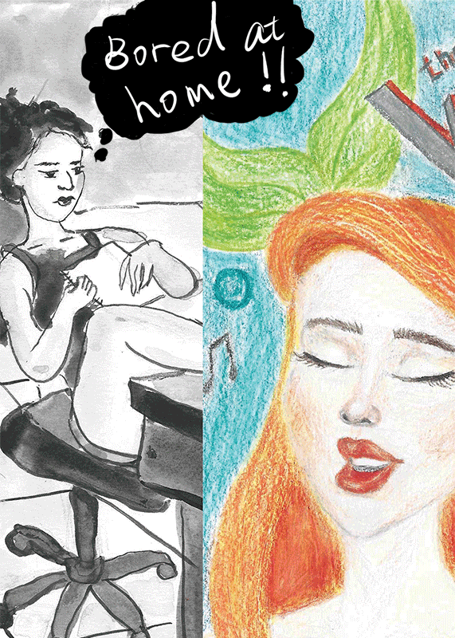
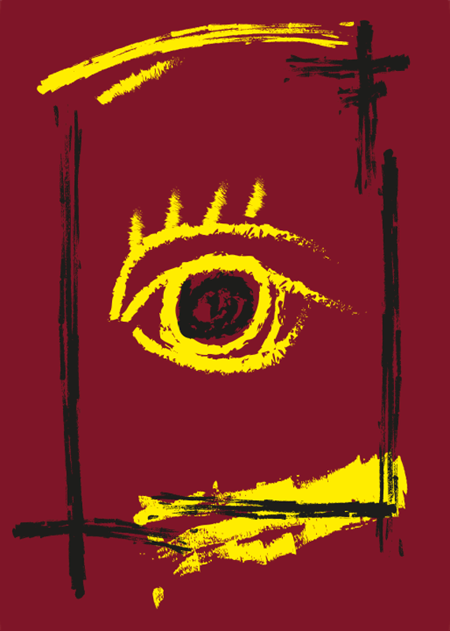
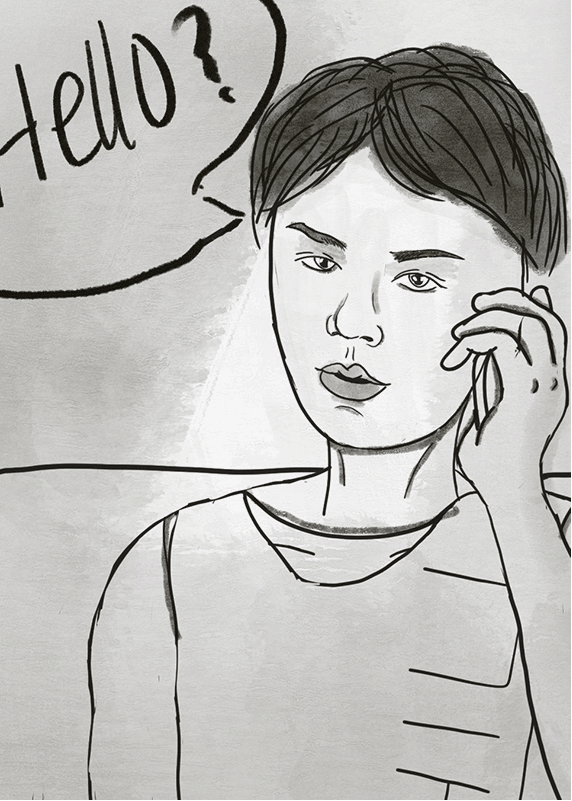

I am a student who is majoring in Art. This is my portfolio site, take your time here.

SELF PORTRAIT: "Lin"
Inspired By Movie "The Addams Family" and "Corpse Bride"
Big Fan of "The Addams Family"
My name is Xixi Lin. I am still an Art student at City College. I started taking painting class when I was 17 years old. After a year and a half of training, I took the "Art College Entrance Exam" in China, and I reviewed a really good grade. When I came to New York, I attended LaGuardia Community College majoring in Photography. It was a fun experience, but not as fun as drawing...
After I transferred to City College, I put all my energy into illustration and hand drawing. It's been a long time since I stopped painting. There is so much work to be done! This year, I found a new interest: Website Design. Coding is difficult, but fun. I want to learn more about website design and continue my drawing practice.
Projects

100% HAND DRAWING

50% DIGITAL & 50% HAND DRAWING

GROUP WORK: ANIMATION
Thank You, Bye